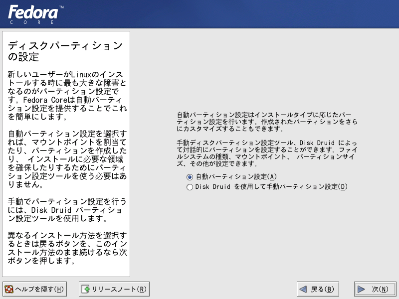
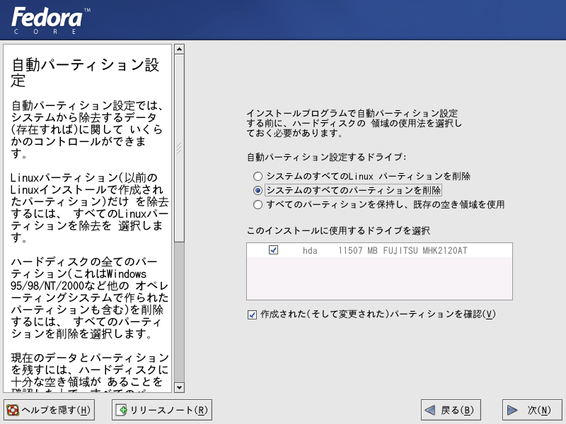
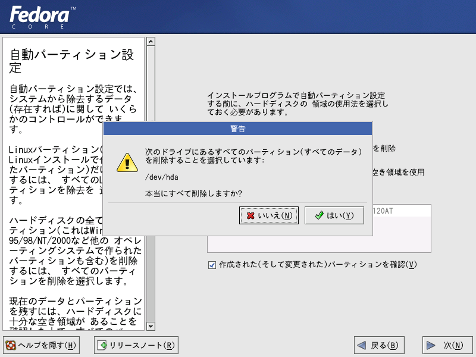

フェドーラ リナックス（Yarrow)のインストール手順について その（３）
７．ハードディスクのパーティションを設定します。よく分からない場合、自動パーティション設定を選ぶと、最適なパーティションに設定されます。

８．上書きインストールを行うか、クリーンインストールを行うかを尋ねてくるので、画面左端のヘルプを読んで、選択は慎重に行ってください。下の例は、Linuxを単独でクリーンインストールする場合です。

９．再度、確認を促がすメッセージが表示されます。変更したい場合は、「いいえ」を選んで設定し直すことが出来ます。

次へ<NEXT>